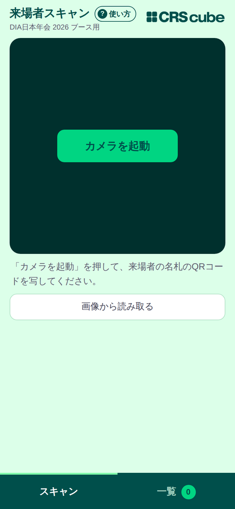
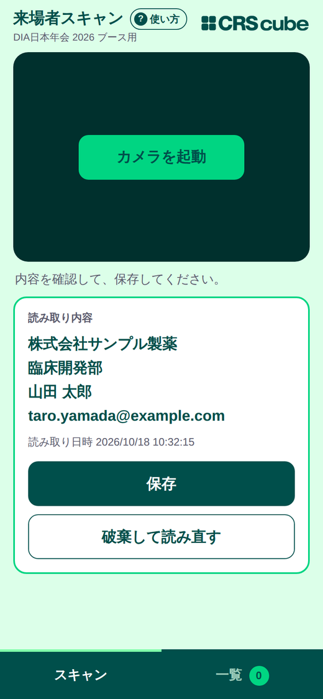
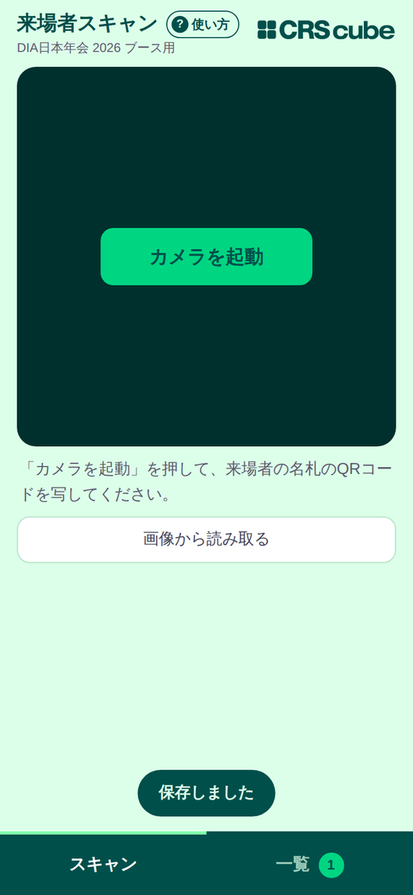
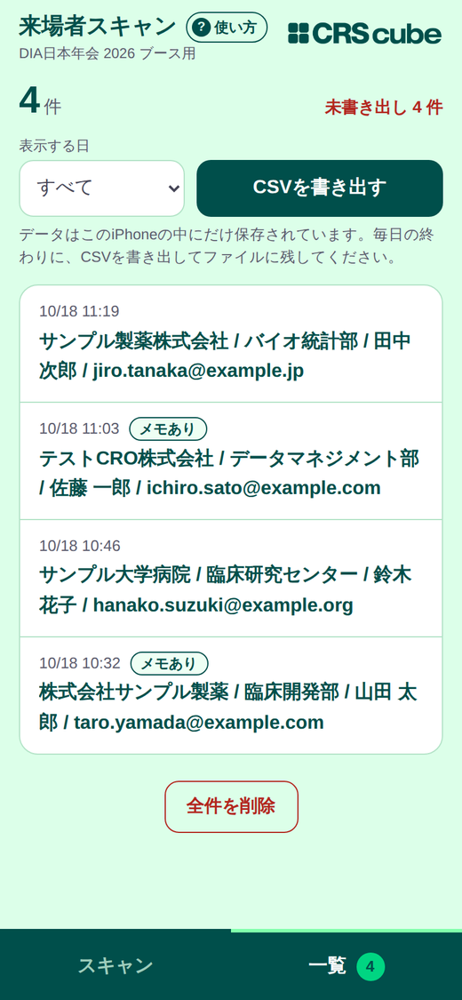
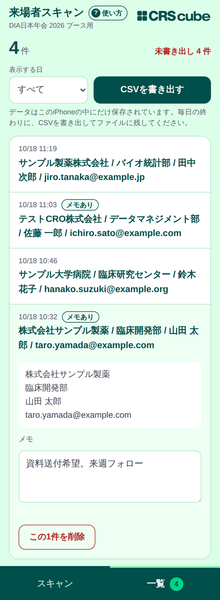

まずはこの3つだけ
- 名札のQRコードを写して、内容を確認し保存を押す
- 気づいたことは、あとで一覧でメモに残す
- 毎日の終わりに、一覧からCSVを書き出す
1はじめに（最初の1回だけ）
- 案内されたURLを、iPhoneのChromeで開きます。
- カメラの許可を聞かれたら「許可」を選びます。
毎回URLを入れなくてすむよう、ブックマークなどに登録しておくと便利です。
いつも「同じブラウザ・同じURL」で開いてください。
記録はそのブラウザの中に保存されます。SafariとChromeを使い分けたり、別のURLで開いたりすると、前に保存した記録が見えなくなります。
2QRコードを読み取って保存する
① カメラを起動する
カメラを起動を押します。画面にカメラの映像が出ます。

最初のスキャン画面
② 名札のQRコードを写す
来場者の名札のQRコードを、画面の枠の中に入れます。読み取れると自動で止まり、内容と読み取り日時が表示されます。
③ 内容を確認して「保存」
会社名・所属・氏名・メールアドレスなどが表示されます。内容を見て、保存を押します。

読み取り結果の確認画面（内容はサンプルです）
- 破棄して読み直す…保存せずにやり直したいとき。
- 保存すると「保存しました」と表示され、そのまま次の人の読み取り待ちになります。
- 保存した直後の数秒間は、同じQRコードを読み取りません（二重登録の防止）。

保存直後
読み取ったら、すぐ「保存」を押してください。
保存する前にページを開き直したり、長く他のアプリに切り替えたりすると、その内容は消えてしまいます。
知っておくと便利なこと
- 同じ人が何度か来たときは、そのたびに別の記録として残ります（まとめられません）。
- 他のアプリに切り替える、画面を閉じる、一覧画面に移ると、カメラは止まります。スキャン画面にもどってカメラを起動で再開できます。
- カメラで読めないときは、画像から読み取るでQRコードの写真から読み取れます。
3一覧で確認する・メモを書く・削除する
画面下の一覧タブを押すと、保存した来場者が新しい順に並びます。

一覧画面（内容はサンプルです）
| 件数 | 画面左上に、表示中の件数が出ます。 |
|---|
| 未書き出し | 赤字の「未書き出し ○ 件」は、まだCSVにしていない記録の数です。CSVを書き出すと「すべて書き出し済み」になります。 |
|---|
| 表示する日 | 日付を選ぶと、その日の分だけ表示します（CSVもその日の分だけになります）。 |
|---|
| メモあり | メモを書いた記録には「メモあり」の印がつきます。 |
|---|
メモを書く
記録を押すと開きます。メモの欄に、「資料送付希望」「来週フォロー」など、あとで役立つことを書いておけます。入力すると自動で保存されます（保存ボタンはありません）。

記録を開いたところ（内容はサンプルです）
1件だけ削除する
開いた記録の下にあるこの1件を削除を押します。確認のメッセージが出ます。
だれが来たかを担当者どうしで共有したいとき
記録は各自のiPhoneの中だけにあり、他の担当者の画面には出ません。お互いに一覧画面を見せ合って共有してください。
4CSVを書き出す（毎日の終わりに）
CSVは、あとで来場者リストをつくるための保存用ファイルです。万一のとき（記録が消えたとき）のバックアップにもなります。毎日の終わりに必ず書き出してください。
- 一覧タブを開く。
- 「表示する日」を選ぶ（すべてなら全件、日付ならその日の分）。
- CSVを書き出すを押す。
- 共有のメニューが出たら、「“ファイル”に保存」を選び、保存先を決めて保存する。
- 画面に「書き出しました」と出て、「未書き出し」の件数が減ったことを確認する。
CSVの中身
ファイル名は dia2026_visitors_… で始まり、日付と時刻が入ります。ExcelやGoogleスプレッドシートで開けます。
書き出したあとにメモを足した記録は、もう一度「未書き出し」にもどります。最後にもう一度、書き出しておくと安心です。
5大事な注意事項
- 記録は、このiPhoneのChromeの中だけに保存されます。インターネット上のサーバーには送られません。
- 次のことをすると、保存した記録が消えます。
- Chromeの履歴・サイトデータ・Cookieなどを消去する
- 全件を削除を押す（確認が2回出ます）
- 「プライベートブラウズ（シークレットタブ）」では使えません。通常のタブで開いてください。
- 来場者の氏名・メールアドレスなどの個人情報が入っています。画面を来場者や関係のない人に見せない、CSVの保存・共有は社内の個人情報の取り扱いルールに従う、を守ってください。
イベント終了後
- 最後にCSVを書き出し、「すべて書き出し済み」になっていることを確認する。
- CSVの共有・提出は、別途ご案内する方法で行う。
- 共有・提出が終わったら、全件を削除で各自のiPhoneの記録を消す。
※ 先に「全件を削除」をしないでください。消した記録は元にもどせません。
6うまくいかないとき
QRコードを読み取ってくれない
- QRコード全体が、画面の枠に入っているか確認する。
- 近すぎるとピントが合いません。少し離してみる。
- 名札を平らにして、明るい場所で。照明が名札に反射しているときは、角度を変える。
- それでもだめなときは、QRコードをiPhoneの標準カメラで撮影し、画像から読み取るで選ぶ。
カメラが起動しない／画面が真っ暗
- カメラの許可が必要です。iPhoneの「設定」→「Chrome」→「カメラ」がオンになっているか確認する。
- ほかのアプリがカメラを使っていないか確認する。
- ページを開き直して、カメラを起動をもう一度押す。
- アドレスが
https:// で始まっているか確認する。
「この環境では保存領域を使えません」と出る
プライベートブラウズ（シークレットタブ）で開いている可能性があります。いったん閉じて、通常のタブで開き直してください。
前に保存した記録が見えない
- 前回と同じブラウザ（Chrome）・同じURLで開いているか確認する。
- 「表示する日」が、見たい日になっているか確認する（すべてにすると全件出ます）。
- Chromeの履歴・サイトデータを消去していないか確認する。消えてしまった場合は、書き出し済みのCSVを確認する。
CSVの書き出しで共有メニューが出ない
iPhoneの設定によっては、メニューが出ずにファイルが直接保存されることがあります。「ファイル」アプリの中を確認してください。それでも見つからないときは、書き出しをやり直してください。